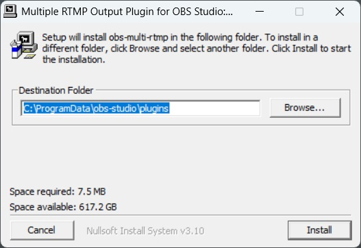
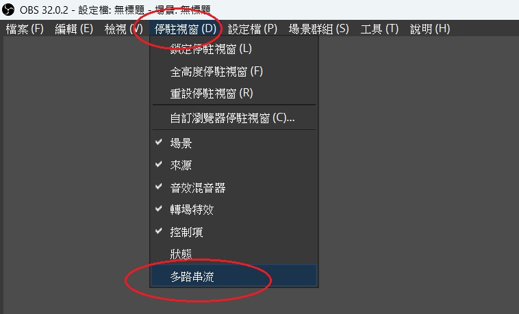
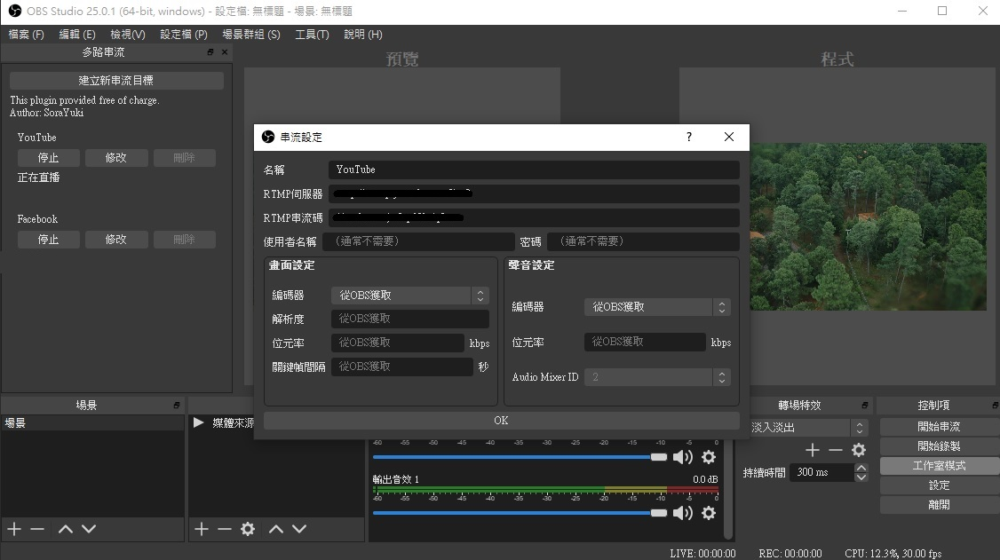
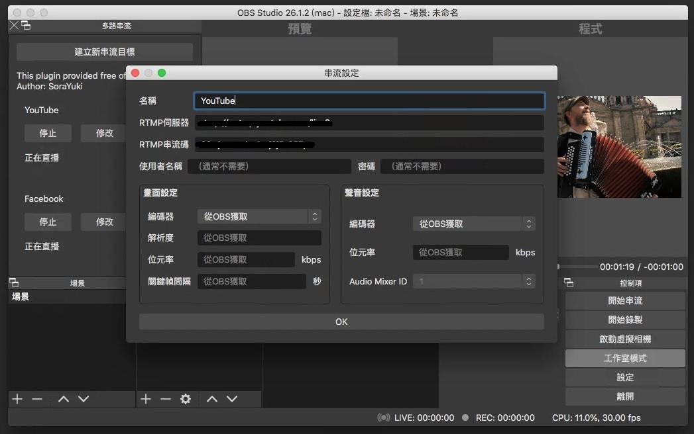

OBS 預設只能直播一個平台
但我需要同時直播 YouTube 和 Facebook
所以這陣子都在搜尋有沒有什麼好的解決方法
例如
- 開兩個 OBS (兩個 OBS 的設定可能會打架)
- 用第三方軟體: Restream, Straas (未來可能改為收費)
- 自架伺服器: Nginx (學習門檻較高)
在心灰意冷的時候看到 OBS Forum 上有人做了 Plug-in
話不多說就趕快開始吧！
Windows 安裝
- 到 GitHub Releases 頁面，依照自己的作業系統下載安裝檔後，解壓縮執行安裝
我是選擇obs-multi-rtmp-0.7.3.0-windows-x64-Installer.exe

- 打開 OBS，介面左上角會出現一個
多路串流的區塊
如果沒有出現，可以點擊停駐視窗>多路串流

-
點擊
建立新串流目標> 輸入名稱、URL、串流金鑰等設定 >確定 -
點擊
開始送直播訊號

Windows 解除安裝
- 打開檔案總管，到
C:\ProgramData\obs-studio\plugins - 刪除
obs-multi-rtmp資料夾
Mac 安裝
-
到 GitHub Releases 頁面，依照自己的作業系統下載安裝檔，Mac 請選擇
.pkg -
點兩下執行安裝
若顯示無法打開 XXX，因為它來自未識別的開發者
就要去系統偏好設定>安全性與隱私> 點擊強制打開 -
打開 OBS，介面左上角會出現一個
多路串流的區塊
如果沒有出現，可以點擊停駐視窗>多路串流 -
點擊
建立新串流目標> 輸入名稱、伺服器、串流碼等設定 >OK -
點擊
開始送直播訊號

補充
這個套件可以單獨停止或開始某路直播
也可以個別設定解析度和編碼格式
不過要注意電腦效能和網速能承受的量